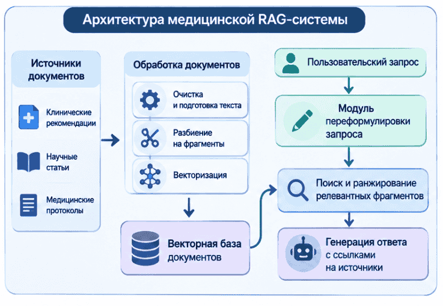
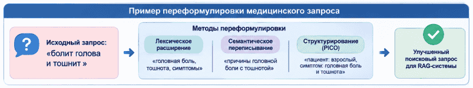
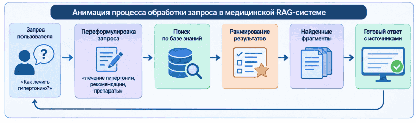

Abstract of the master's thesis
Author and research topic information
Author: Ivanchik A. K.
Scientific adviser: Kharchenko A. V.
Topic of the master's thesis: "Study of the impact of query reformulation methods on the clinical relevance of retrieved fragments in a Russian-language medical RAG system".
Annotation
The work is devoted to the study of query reformulation methods in Russian-language medical systems built on the Retrieval-Augmented Generation (RAG) architecture. The problem of mismatch between the user's query formulation and the terminology used in clinical guidelines and other medical documents is considered. Such a mismatch can lead to the retrieval of thematically close but insufficiently relevant fragments, which reduces the quality of subsequent answer generation. The aim of the research is to evaluate the impact of various query reformulation methods on the relevance of retrieved fragments. It is planned to compare original queries with queries transformed using lexical expansion, semantic rewriting, and structuring of medical information. Russian-language clinical guidelines are considered as the subject area. The results of the study can be used in the development of information support systems for medical specialists.
Keywords: Retrieval-Augmented Generation, RAG, query reformulation, query expansion, medical information retrieval, clinical guidelines, Russian language, large language models, semantic search, clinical relevance.
Research relevance
The development of digital healthcare is accompanied by an increase in the volume of medical information presented in electronic form. Such sources include clinical guidelines, standards of medical care, diagnostic and treatment protocols, scientific publications, reference materials, and regulatory documents. For a medical specialist, not only the availability of this information is important, but also the ability to quickly find specific provisions related to the clinical situation under consideration.
One of the significant sources of professional information is clinical guidelines. They contain information on diagnosis, prevention, treatment, and rehabilitation for various diseases. At the same time, documents can be large, have a complex structure, and be updated regularly. Manual search for the necessary information takes time and assumes that the user knows in advance which terms and formulations are used in the corresponding document.
Traditional search engines largely depend on the coincidence of words and expressions in the query and the document. However, in the medical domain, the same clinical situation can be described in different ways. A patient or user may formulate a question in everyday language, while clinical guidelines use professional terms, diagnostic formulations, abbreviations, and classification designations. For example, the expression "headache and nausea" may be associated with a search for information about headache, associated symptoms, diagnostic criteria, and conditions requiring additional examination. A direct search for the original phrase does not always allow finding all the necessary fragments.
To solve such problems, Retrieval-Augmented Generation systems are used. In such an architecture, the language model generates an answer based on documents retrieved from an external knowledge base. Unlike generation based solely on the parameters of the language model, RAG allows using an updated corpus of documents and linking the answer to specific sources. However, the presence of a retrieval mechanism does not in itself guarantee that the most relevant information will be included in the generation context. The quality of the final answer depends on the completeness and accuracy of the retrieved fragments, and therefore on the effectiveness of the retrieval stage.
One of the factors affecting retrieval quality is the formulation of the original query. A short question may not contain important characteristics of the clinical situation, and a colloquial formulation may not match the terminology of the document. Query reformulation allows transforming the original question into a form more suitable for retrieval: clarifying concepts, adding synonymous terms, expanding abbreviations, highlighting clinically significant features, or presenting the question in a structured form.
At the same time, automatic query expansion in the medical field is associated with additional risks. The language model may add information that the user did not report, misinterpret a symptom, or replace the original concept with a narrower medical term. As a result, the query may become formally more detailed but lead to the retrieval of documents that do not correspond to the original clinical task. Therefore, it is necessary to evaluate query reformulation methods not only by the linguistic correctness of the resulting text but primarily by the quality of the retrieved fragments.
The problem is particularly relevant for Russian-language medical systems. The Russian language is characterized by a developed system of inflection, variability of terminological forms, the presence of professional and colloquial designations, abbreviations, and synonyms. In addition, the availability of annotated medical corpora and specialized retrieval test sets is limited compared to the English-language domain. Consequently, the results of studies obtained on English-language collections cannot be automatically transferred to Russian-language clinical documents.
Thus, the relevance of the research is determined by the need to establish which query reformulation methods allow improving the clinical relevance of retrieved fragments in a Russian-language medical RAG system, as well as to determine the limitations of such methods and the conditions for their effective application.
Goal and objectives of the research
Research goal - to evaluate the impact of various query reformulation methods on the clinical relevance of fragments retrieved from a Russian-language corpus of clinical guidelines within a RAG system.
To achieve this goal, the following objectives are planned:
- Study scientific publications and existing software solutions in the field of information retrieval, Retrieval-Augmented Generation, and automatic query reformulation.
- Consider the main approaches to query transformation, including Query Expansion, Query Rewriting, the use of pseudo-documents, and structuring of medical questions.
- Analyze the features of Russian-language medical terminology that affect information retrieval in clinical guidelines.
- Determine the requirements for a set of test queries and reference fragments of clinical guidelines necessary for comparative evaluation of methods.
- Prepare an experimental set of Russian-language medical queries and define criteria for evaluating the clinical relevance of retrieved fragments.
- Implement and integrate several query reformulation variants into the RAG pipeline.
- Conduct comparative experiments using original and transformed queries with unchanged retrieval mechanism parameters.
- Evaluate the results using information retrieval metrics and expert assessment, analyze the impact of reformulation on retrieval completeness and accuracy.
- Formulate recommendations on the application of query reformulation methods in Russian-language medical RAG systems.
Object and subject of research
Object of research - information retrieval processes in Russian-language medical systems using the Retrieval-Augmented Generation architecture.
Subject of research - query reformulation methods and their impact on the clinical relevance of fragments retrieved from a corpus of clinical guidelines.
Assumed scientific novelty
The scientific novelty of the research lies in the comparative evaluation of query reformulation methods as applied to Russian-language medical information retrieval, taking into account the clinical relevance of retrieved fragments. Unlike evaluation limited to the general semantic similarity of the query and the retrieved text, the work assumes taking into account the correspondence of the fragment to the content of the clinical question and its suitability for subsequent use in the RAG context.
Within the framework of the research, it is planned to compare several approaches to query transformation: lexical expansion using medical terms and synonyms; semantic query rewriting using a large language model; structuring the question with the allocation of clinically significant components; a combined variant combining several transformation methods.
Special attention will be paid to preserving the original meaning of the query. For medical retrieval, it is important that reformulation does not add unconfirmed symptoms, diagnoses, patient characteristics, or circumstances of the clinical situation. Therefore, it is planned to evaluate not only the retrieval quality but also the semantic correctness of the transformed query.
The research hypothesis is the assumption that reformulation methods that take into account medical terminology and the structure of the clinical question can increase the completeness of finding relevant fragments compared to retrieval by the original query. At the same time, the magnitude of the effect and the applicability of individual methods must be established experimentally.
Methodological basis and research methods
The methodological basis of the research consists of methods of information retrieval, natural language processing, semantic text analysis, and evaluation of information retrieval quality. The work assumes the use of a comparative experiment in which the same set of original queries is processed by several variants of the retrieval pipeline.
The baseline variant is retrieval by the original query without preliminary reformulation. The results obtained will be compared with the results of retrieval after applying various transformation methods. For correct comparison, the parameters of the document corpus, chunking, retrieval index, output size, and subsequent processing of results must remain the same. Thus, differences in retrieval quality can be attributed to the applied reformulation method rather than to changes in other system components.

The first approach under consideration is lexical query expansion (Query Expansion). It involves adding terms, synonyms, full forms of abbreviations, and other lexical variants that may be used in clinical documents. Such an approach allows partially compensating for differences between the user's formulation and professional medical terminology. However, excessive expansion can lead to the appearance of irrelevant words and an increase in the number of false matches.
The second approach is semantic query rewriting (Query Rewriting). In this case, the language model transforms the original question into a more precise formulation intended for the retrieval mechanism. With proper tuning, such an approach allows revealing the meaning of short questions, eliminating ambiguity, and highlighting the main information needs of the user. The main limitation is the possibility of semantic distortion: the model may interpret an insufficiently defined query too specifically or add information absent from the original question.
The third approach is related to structuring the clinical question. One of the well-known ways to represent a clinical information need is PICO, which includes characteristics of the patient or problem (Population), intervention (Intervention), comparison (Comparison), and outcome (Outcome). Such a structure is widely used in evidence-based medicine when formulating questions for searching scientific evidence. Within the framework of this research, PICO elements can be used as a guide for highlighting significant components of the query. At the same time, it must be taken into account that not every question on clinical guidelines contains all four components, so the structure should not be applied mechanically.
The fourth variant is combined reformulation, in which the language model first identifies key concepts and possible terminological correspondences and then forms a retrieval query while preserving the original clinical meaning. Such an approach allows combining the advantages of lexical and semantic transformation but requires control over the addition of new semantic components.

To evaluate retrieval quality, it is planned to use Precision@k and Recall@k metrics. Precision@k characterizes the proportion of relevant fragments among the first k results of the output, and Recall@k - the proportion of found relevant fragments from the total number of reference relevant fragments. Additionally, nDCG@k can be used, which takes into account the position of relevant results in the ranked list. The use of several metrics will allow evaluating not only the presence of relevant fragments but also the quality of their location in the retrieval output.
Quantitative metrics are planned to be supplemented with expert assessment. Experts may be asked to evaluate the correspondence of the retrieved fragment to the original clinical question, the completeness of the disclosure of the required information, and the presence of semantic distortions. At the same time, expert assessment should be carried out according to a predefined scale and a unified instruction to ensure comparability of results.
Planned practical results
The main practical result of the work should be a software module for query reformulation intended for integration into a Russian-language medical RAG system. The module should provide transformation of the original user question into one or several retrieval formulations taking into account the specifics of medical terminology.
Within the framework of the research, it is planned to prepare an experimental set of Russian-language medical queries related to the content of clinical guidelines and to form reference sets of relevant fragments for them. Such a set will allow for repeatable comparison of various reformulation methods and evaluation of changes in retrieval quality.
It is planned to develop a software pipeline that will include receiving the original query, transforming it by the selected method, passing the resulting formulation to the retrieval mechanism, retrieving and ranking fragments, and saving the results for subsequent analysis. If necessary, the user should be able to compare the original query and its transformed variant.
The practical significance of the work lies in the possibility of improving the quality of retrieval from clinical guidelines and other medical documents. More accurate retrieval of fragments can improve the information basis of the RAG system's answer and reduce the number of cases where thematically close but non-answering information enters the generation context. The developed module is not intended for independent diagnosis or prescription of treatment and should be considered as a component of information support with mandatory verification of medical information by a specialist.
Review of research and developments on the topic
Global review
Research on Retrieval-Augmented Generation is developing at the intersection of information retrieval and large language models. One of the fundamental works in this area is the publication by P. Lewis and co-authors "Retrieval-Augmented Generation for Knowledge-Intensive NLP Tasks" (2020). It considers an architecture that combines the parametric memory of a generative model with non-parametric memory represented by an external document base. Such an approach allows using retrieved information when generating an answer and updating the information base independently of retraining the language model.
Along with the development of RAG systems, a separate area of research has formed devoted to improving the retrieval query. In the work by X. Ma and co-authors "Query Rewriting in Retrieval-Augmented Large Language Models" (2023), the Rewrite-Retrieve-Read scheme is proposed, in which the original query is first transformed, then used to retrieve context, after which the language model generates an answer. The authors consider reformulation as an independent component of the RAG process and show that the original user formulation does not always correspond to the information need required for retrieval.
Another approach is presented in the work by L. Wang, N. Yang, and F. Wei "Query2doc: Query Expansion with Large Language Models" (2023). The Query2doc method uses a large language model to generate a pseudo-document containing additional information on the original query. The resulting text is used to expand the retrieval query. The authors investigate the application of such an approach in sparse and dense retrieval. For this work, this publication is important as an example of using LLM not only for generating the final answer but also for improving the retrieval representation of the query.
Systematization of RAG methods is presented, in particular, in the review work by Y. Gao and co-authors "Retrieval-Augmented Generation for Large Language Models: A Survey". It considers the main components of the RAG architecture, methods of information retrieval, strategies for combining retrieved context with generation, and directions for further development of systems. For the study of query reformulation methods, this review is important because it allows considering query transformation as part of a more general process of RAG optimization.
In the medical field, not only the thematic proximity of the retrieved document is of particular importance but also the correspondence of the fragment to the clinical question. In the work by M. Sun and co-authors "PICOs-RAG: PICO-supported Query Rewriting for Retrieval-Augmented Generation in Evidence-Based Medicine" (2025), the application of the PICO structure for transforming medical queries is considered. The authors propose highlighting the key elements of the clinical question and using them when forming the retrieval query. This approach is directly related to the task of this research, as it allows taking into account the subject structure of the medical information need.
In the publication by H. Chang and co-authors "Hypothesis-Conditioned Query Rewriting for Decision-Useful Retrieval" (2026), query reformulation is considered taking into account hypotheses and the need to distinguish alternative answer variants. The authors propose forming several target queries aimed at finding confirming and distinguishing evidence. The work demonstrates the development of approaches in which the query is transformed not only to improve thematic relevance but also to retrieve information useful for decision-making.
Thus, foreign studies show a transition from using a single original query to more complex schemes of its transformation, expansion, and structuring. At the same time, the results obtained on general information retrieval and English-language medical datasets do not provide an exhaustive answer to the question of the effectiveness of such methods for Russian-language clinical guidelines. This justifies the need for a separate experimental study.
National review
In Russia, the direction of medical natural language processing is developing, related to the creation of specialized corpora, datasets, and models for analyzing medical texts. One of the significant projects is RuMedBench - a set of tasks for evaluating the understanding of medical text in Russian. It includes tasks related to predicting a diagnosis from a description of symptoms, recommending symptoms for clarification, answering medical questions, and recognizing medical entities. The presence of such datasets creates a basis for the development and comparison of Russian-language medical NLP methods.
An important direction is the normalization of medical concepts. In the work by A. Nesterov and co-authors "RuCCoN: Clinical Concept Normalization in Russian" (2022), a Russian-language dataset for matching mentions of clinical concepts with medical concepts is presented. The authors describe the annotation performed by specialists and consider the problem of variability in the designation of medical concepts. Such studies are directly relevant to query reformulation, as they allow taking into account differences between colloquial expressions, clinical terms, and standardized designations.
Another example is RuMedNLI - a Russian-language dataset for the task of natural language inference in the clinical domain. It was created based on the translation of the English-language MedNLI corpus and is intended for studying relations between medical texts and statements. Although RuMedNLI is not a dataset for evaluating retrieval relevance, it demonstrates the development of resources necessary for studying semantic relations in Russian-language medical texts.
In 2026, the review "Data Foundations for Medical AI: Provenance, Reliability and Limitations of Russian Clinical NLP Resources" was published, devoted to the state of Russian-language medical NLP resources. The work analyzes available datasets, their provenance, limitations, and applicability to clinical tasks. The authors draw attention to the insufficiency of open resources for a number of tasks related to clinical decision support and the application of medical recommendations. This confirms the need to develop specialized experimental sets for evaluating medical information retrieval.
In addition to scientific corpora and research models, applied services using retrieval from medical documents and generative models are appearing in Russia. Such solutions demonstrate practical interest in systems capable of providing answers with references to sources. However, the presence of an applied service in itself does not indicate the proven effectiveness of a specific reformulation method. For scientific research, it is important to separately evaluate the quality of retrieval, the correctness of retrieved fragments, and the preservation of the original meaning of the query.
The review shows that Russia has already formed a basis for medical NLP research, including datasets for understanding clinical texts and normalizing medical concepts. At the same time, the task of comparative evaluation of query reformulation methods specifically in a Russian-language RAG system working with a corpus of clinical guidelines requires additional elaboration.
Local review: research and development at KubSU
As part of the preparation of the master's thesis on the basis of Kuban State University, a prototype of an intelligent clinical decision support system focused on retrieving information from a corpus of clinical guidelines is being developed. The previous stage of the work was devoted to building the main contour of the RAG system: preparing documents, extracting text content, splitting documents into fragments, building a vector index, and organizing retrieval with subsequent generation of an answer based on the found sources.
The technological basis of the prototype used document processing and retrieval infrastructure tools, including Python, ChromaDB, text vectorization models, lexical and vector retrieval mechanisms, and a language model for generating an answer. The system provides for the use of references to the found sources, which allows verifying the origin of information and comparing the answer with the original documents.
The results of the development are reflected in the publication by A. K. Kopanetskaya and A. V. Kharchenko "Intelligent clinical decision support system based on Retrieval-Augmented Generation", published in the materials of the VIII All-Russian Scientific and Practical Conference of Young Scientists "Applied Mathematics: Modern Problems of Mathematics, Informatics and Modeling" (Krasnodar, April 13-18, 2026, pp. 329-332). The publication describes the main stages of processing clinical guidelines, building an index, organizing hybrid retrieval, and generating an answer using the retrieved fragments.
This research is a development of the specified work. If earlier the main attention was paid to building the RAG contour and organizing retrieval from clinical guidelines, then in the master's thesis the central object of study becomes the input retrieval query. It is planned to investigate how its transformation affects the composition and clinical relevance of retrieved fragments with an unchanged configuration of the retrieval system.
Thus, the local part of the research relies on the already created software prototype and published results of its development. This allows focusing experimental work on comparing reformulation methods rather than creating retrieval infrastructure from scratch.
Planned organization of the experiment
The experiment is planned to be organized in such a way as to ensure comparability of results for different reformulation methods. A corpus of Russian-language clinical guidelines that has undergone preliminary processing and indexing will be used as initial data. Documents will be divided into fragments suitable for retrieval and subsequent transfer to the language model context.
For each test query, it is necessary to determine reference fragments that contain information directly answering the question posed. Reference annotation should take into account not only the coincidence of medical terms but also the semantic correspondence to the clinical task. If possible, annotation should be performed with the participation of a specialist with medical training or verified with their participation.
Comparison is planned to be carried out in several experimental configurations:
- Baseline retrieval by the original query without reformulation.
- Retrieval by a query expanded with medical synonyms and terminological variants.
- Retrieval by a query rewritten by a language model while preserving the original meaning.
- Retrieval by a structured query in which the main clinical components are highlighted.
- Retrieval by a combined query formed using several transformation methods.
For each configuration, the original query, the transformed variant, the list of retrieved fragments, their positions in the output, and the values of the used retrieval scores will be saved. This will allow not only calculating the final metrics but also analyzing the nature of errors: missing relevant fragments, the appearance of irrelevant results, a shift in output towards another clinical topic, or a change in the original meaning of the question.

The main quantitative indicators will be Precision@k and Recall@k. If necessary, nDCG@k will be calculated to evaluate the order of relevant fragments. Additionally, an expert assessment of the clinical relevance and semantic correctness of the reformulated queries is planned. The final comparison will determine which methods are most effective for different types of queries and which limitations must be taken into account when using them.
Own results
By the time of preparation of this abstract, a prototype of the RAG system intended for retrieving information from a corpus of Russian-language clinical guidelines has been developed. As part of the previous stage, the main components of document processing and the retrieval contour were implemented: obtaining and extracting the text content of documents, cleaning and preparing text, splitting into fragments, building a vector representation, organizing storage of the retrieval index, and retrieving relevant fragments.
The prototype considers a combination of lexical and vector retrieval. The lexical mechanism allows taking into account exact matches of terms and formulations, and vector retrieval - finding semantically close fragments with differences in verbal expression. Additional ranking is intended to refine the order of the found results. The language model's answer is generated using the retrieved context and is accompanied by references to sources.
The main results of the prototype implementation are presented in the publication "Intelligent clinical decision support system based on Retrieval-Augmented Generation" (2026). This work served as the technical and methodological basis for setting the current research task.
At the next stage, it is planned to supplement the existing retrieval contour with a query reformulation module and conduct a controlled comparison of several methods. A separate task is the formation of a test set of medical queries and reference fragments necessary for quantitative and expert evaluation. Therefore, the results of the comparative experiment and conclusions about the effectiveness of specific methods will be formulated after the completion of the corresponding experimental part.
Conclusion
This abstract considers the problem of improving the clinical relevance of information retrieved by Russian-language medical RAG systems. It is shown that the quality of the answer of such a system is determined not only by the capabilities of the generative model but also by how fully and accurately the retrieval mechanism finds fragments corresponding to the original clinical question.
The analysis of foreign studies has shown that query reformulation and expansion are independent directions for improving RAG. Existing methods use lexical expansion, generation of additional retrieval formulations, semantic rewriting, and structuring of clinical questions. Russian research and projects in the field of medical NLP form the basis for working with Russian-language medical texts, however, the task of comparative evaluation of query reformulation on a corpus of clinical guidelines requires further research.
As a basis for conducting the experiment, the developed prototype of the RAG system for retrieval from clinical guidelines is used. In the master's thesis, it is planned to expand it with a query reformulation module and compare various transformation methods under the same retrieval conditions.
The main expected results are:
- systematization of query reformulation methods applicable to medical information retrieval;
- preparation of a Russian-language set of test medical queries and reference fragments;
- implementation and integration of several reformulation methods into the RAG pipeline;
- comparative evaluation of the impact of methods on Precision@k, Recall@k, and other retrieval relevance indicators;
- analysis of the preservation of clinical meaning during automatic query transformation;
- development of recommendations on the choice of reformulation methods for Russian-language medical RAG systems.
Prospects for further work are related to expanding the corpus of clinical documents, involving medical experts in evaluating results, studying various types of clinical queries, and testing the developed approach on additional datasets. A practical direction of development is the integration of the most effective reformulation method into the prototype of the clinical decision support system.
References
- Lewis, P. Retrieval-Augmented Generation for Knowledge-Intensive NLP Tasks / P. Lewis, E. Perez, A. Piktus [et al.] // Advances in Neural Information Processing Systems. - 2020. - URL: https://arxiv.org/abs/2005.11401.
- Ma, X. Query Rewriting in Retrieval-Augmented Large Language Models / X. Ma, Y. Gong, P. He, H. Zhao, N. Duan // Proceedings of the 2023 Conference on Empirical Methods in Natural Language Processing. - 2023. - P. 5303–5315. - DOI: 10.18653/v1/2023.emnlp-main.322.
- Wang, L. Query2doc: Query Expansion with Large Language Models / L. Wang, N. Yang, F. Wei // Proceedings of the 2023 Conference on Empirical Methods in Natural Language Processing. - 2023. - P. 9414–9423. - DOI: 10.18653/v1/2023.emnlp-main.585.
- Gao, Y. Retrieval-Augmented Generation for Large Language Models: A Survey / Y. Gao, Y. Xiong, X. Gao [et al.]. - 2023. - URL: https://arxiv.org/abs/2312.10997.
- Sun, M. PICOs-RAG: PICO-supported Query Rewriting for Retrieval-Augmented Generation in Evidence-Based Medicine / M. Sun, S. Zhao, J. Chen, B. Qin. - 2025. - URL: https://arxiv.org/abs/2510.23998.
- Chang, H. Hypothesis-Conditioned Query Rewriting for Decision-Useful Retrieval / H. Chang, C. Lee, S. Rho, J. Yeo, J. C. Ye. - 2026. - URL: https://arxiv.org/abs/2603.19008.
- Oche, A. J. A Systematic Review of Key Retrieval-Augmented Generation (RAG) Systems: Progress, Gaps, and Future Directions / A. J. Oche, A. G. Folashade, T. Ghosal, A. Biswas. - 2025. - URL: https://arxiv.org/abs/2507.18910.
- Nesterov, A. RuCCoN: Clinical Concept Normalization in Russian / A. Nesterov, G. Zubkova, Z. Miftahutdinov [et al.] // Findings of the Association for Computational Linguistics: ACL 2022. - 2022. - URL: https://aclanthology.org/2022.findings-acl.21/.
- Blinov, P. RuMedNLI: A Russian Natural Language Inference Dataset For The Clinical Domain / P. Blinov, A. Nesterov, G. Zubkova [et al.]. - 2022. - URL: https://physionet.org/content/rumednli-russian-inference/1.0.0/.
- RuMedBench: A Russian Medical Language Understanding Benchmark. - 2022. - URL: https://arxiv.org/abs/2201.06499.
- Data Foundations for Medical AI: Provenance, Reliability and Limitations of Russian Clinical NLP Resources // Informatics. - 2026. - Vol. 13, No. 3. - Art. 45. - DOI: 10.3390/informatics13030045.
- Nogueira, R. Passage Re-ranking with BERT / R. Nogueira, K. Cho. - 2019. - URL: https://arxiv.org/abs/1901.04085.
- Järvelin, K. Cumulated Gain-Based Evaluation of IR Techniques / K. Järvelin, J. Kekäläinen // ACM Transactions on Information Systems. - 2002. - Vol. 20, No. 4. - P. 422–446. - DOI: 10.1145/582415.582418.
- Kopanetskaya, A. K. Intelligent clinical decision support system based on Retrieval-Augmented Generation / A. K. Kopanetskaya, A. V. Kharchenko // Applied Mathematics: Modern Problems of Mathematics, Informatics and Modeling: materials of the VIII All-Russian Scientific and Practical Conference of Young Scientists. - Krasnodar, April 13-18, 2026. - Krasnodar, 2026. - P. 329–332.